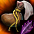

討伐ボス［セルケピア］
セルケピアは、Lv1250以上で挑戦できる討伐ボスです。2026年10月22日に日本版へ追加されました。デイリーで得た朱光の核は討伐バッジなどと交換でき、週間では蠍王の指輪と強化素材を入手できます。


参加条件と入場方法
冒険家協会バー（31,64）のNPC「討伐騎士団長」、または統合ガイド（F1）の「デイリー・週間討伐」から入場します。デイリーと週間のどちらもLv1250以上が対象です。

| 項目 | デイリー | 週間 |
|---|---|---|
| 必要レベル | Lv1250以上 | Lv1250以上 |
| 参加人数 | 8名 | 8名 |
| 必要転生回数・復活制限 | なし | なし |
| 制限時間 | 10分 | 30分 |
| クリア回数 | 基本1日1回 | 週1回 |
| リセット | 毎日0時 | 毎週月曜0時 |
確定報酬の獲得回数は、入場時ではなくクリア時に消費されます。デイリーの基本回数は1日1回で、討伐許可証を使うと追加入場できます。週間は他の週間討伐ボスと週1回のクリア枠を共有します。
デイリー・週間の報酬
| 区分 | 確定報酬 | 期待報酬 |
|---|---|---|
| デイリー | 討伐のコア報酬 1100 | |
| 週間 |  赤く光る尻尾の破片の袋 | Lv1250非規格装備 |
討伐画面のトロフィーボタンから「討伐報酬リスト」を開き、セルケピアの報酬と獲得状況を確認できます。毎日のバッジ素材集めと、週1回の指輪・強化素材の獲得は別の回数として管理します。
蠍王の指輪とは？
蠍王の指輪は、ウィークリーセルケピアの確定報酬として得られる専用リングです。基本性能の大地属性抵抗に加え、火力・耐久力・能力値に関わるOPが抽選されます。
同時に得られる「赤く光る尻尾の破片の袋」を開封すると、指輪の強化素材になる「赤く光る尻尾の破片」を入手できます。指輪本体と、強化に使う素材をセットで集めるのがウィークリーの報酬です。
| 項目 | 内容 |
|---|---|
| アイテム | |
| 装備種 | リング |
| 基本性能 | 大地属性抵抗＋1～5% |
| 装備数制限 | 0/1 |
| 装備位置 | 10番目のリングスロット（右上の3転生枠） |
| 最大スタック数 | 1個 |
| 説明 | 古代のサソリ「セルケピア」をかたどった指輪。その形は赤く燃え上がる光線が乱舞していた血戦を思い出させる。 |
| 素材 | 用途・説明 | 最大スタック数 | 制限 |
|---|---|---|---|
| 赤く光る尻尾の破片の袋 | 蠍王の指輪を強化できる、セルケピアの「赤く光る尻尾の破片」が入った袋。 | 100個 | 取引不可・銀行取引不可 |
| 赤く光る尻尾の破片 | セルケピアが倒された際に残した尻尾の破片。毒針の代わりに付いていた、光学兵器の砲口のような部位。蠍王の指輪の強化に使用。 | 255個 | 取引不可・銀行取引不可 |
どんなOPが抽選される？
抽選候補には、物理攻撃向けの強打ダメージ・強打確率・最終防御力無視、魔法攻撃向けの魔法攻撃力・魔法抵抗弱化などがあります。限界突破称号のダメージ制限を伸ばす効果や、HP・CP・防御力、各種能力値が上がる効果も候補です。
OPには①②③の付与枠があり、枠によって抽選候補が異なります。限界突破関連・敵の最終防御力無視・魔法攻撃力増加の制限値は①だけの候補です。物理強打や攻撃力、耐久力・能力値のOPは①②③の候補になります。
同じ効果でも数値に幅があります。例えば物理強打ダメージ増加は4%・6%・10%の3通りです。指輪を比較するときは、効果の種類と、どの数値が付いたかをあわせて確認します。
| 効果 | 数値1 | 数値2 | 数値3 | 付与枠 |
|---|---|---|---|---|
| 限界突破称号の物理ダメージ制限の超過量適用増加 | 1% | 2% | 3% | ①②③ |
| 限界突破称号の魔法ダメージ制限の超過量適用増加 | 1% | 2% | 3% | ①②③ |
| 限界突破称号の物理ダメージ制限＋ | 1 | 2 | 3 | ①②③ |
| 限界突破称号の魔法ダメージ制限＋ | 1 | 2 | 3 | ①②③ |
| 敵の最終防御力無視増加 | 1% | 2% | 3% | ①②③ |
| 魔法攻撃力増加（%）制限＋ | 1 | 2 | 3 | ①②③ |
| 物理強打ダメージ増加 | 4% | 6% | 10% | ①②③ |
| 物理強打確率（%）＋ | 5% | 7% | 9% | ①②③ |
| 物理攻撃力増加 | 1% | 2% | 3% | ①②③ |
| 魔法攻撃力増加 | 4% | 8% | 12% | ①②③ |
| 敵の魔法抵抗（%）－ | 2% | 4% | 6% | ①②③ |
| 防御力増加 | 5% | 10% | 15% | ①②③ |
| 最大HP増加 | 4% | 7% | 10% | ①②③ |
| 最大CP増加 | 9% | 12% | 15% | ①②③ |
| 力＋ | 5 | 10 | 25 | ①②③ |
| 知恵＋ | 5 | 10 | 25 | ①②③ |
| 知識＋ | 5 | 10 | 25 | ①②③ |
| 健康＋ | 5 | 10 | 25 | ①②③ |
| 敏捷＋ | 5 | 10 | 25 | ①②③ |
| カリスマ＋ | 5 | 10 | 25 | ①②③ |
| 運＋ | 5 | 10 | 25 | ①②③ |
「敵の最終防御力無視増加」は、フロントラインと同じ計算で敵の最終防御力を下げます。「魔法攻撃力増加（%）制限＋」は魔法の限界ダメージに数値を加えます。効果が＋2なら、上限20,000は20,002になります。
デイリーで作るヤティカヌ討伐バッジ
ヤティカヌ討伐バッジは、インベントリに持っているだけで効果を得られるアイテムです。デイリーセルケピアで得た「朱光の核」を討伐騎士団長へ渡すと、1〜3段階のいずれも直接交換できます。1段階から順に強化することもできます。
主な効果は、限界突破称号の物理・魔法ダメージ制限値への加算です。3段階では、それぞれの制限値に3,000が加算され、PvPダメージ・PvP防御力もそれぞれ3%上がります。
同じ討伐バッジを複数持っている場合は、最も高い段階の効果だけが適用されます。他のバッジの個数にはカウントされません。
| バッジ | 物理ダメージ制限 | 魔法ダメージ制限 | PvPダメージ | PvP防御力 |
|---|---|---|---|---|
| ヤティカヌ討伐バッジ［1段階］ | ＋1,000 | ＋1,000 | ＋1% | ＋1% |
| ヤティカヌ討伐バッジ［2段階］ | ＋2,000 | ＋2,000 | ＋2% | ＋2% |
| ヤティカヌ討伐バッジ［3段階］ | ＋3,000 | ＋3,000 | ＋3% | ＋3% |
朱光の核はセルケピアの尻尾から落ちた核で、最大スタック数は999個です。バッジは各段階とも最大1個です。核・バッジともに、取引・銀行取引・商店販売はできません。
朱光の核の交換・強化費用
| 交換品 | 直接購入 | バッジの強化費用 |
|---|---|---|
| ヤティカヌ討伐バッジ［1段階］ | 朱光の核4個 | － |
| ヤティカヌ討伐バッジ［2段階］ | 朱光の核20個 | 1段階バッジ＋朱光の核16個 |
| ヤティカヌ討伐バッジ［3段階］ | 朱光の核40個 | 2段階バッジ＋朱光の核20個 |
| 朱光の核7個 | － | |
| 朱光の核15個 | － |
3段階を得るまでの核は、直接購入なら40個、1段階から順に強化しても4＋16＋20＝40個です。1・2・3段階をそれぞれ別に購入すると4＋20＋40＝64個になります。同じ討伐バッジの効果は重複せず、最も高い段階だけが適用されます。
討伐許可証は最大999個・取引不可。ひび割れた邪念は最大10個で、取引・銀行取引・商店販売不可です。ひび割れた邪念は、特定地域を掌握したエリアボスから得られる戦利品で、透明なガラス状の部分に割れた傷があります。